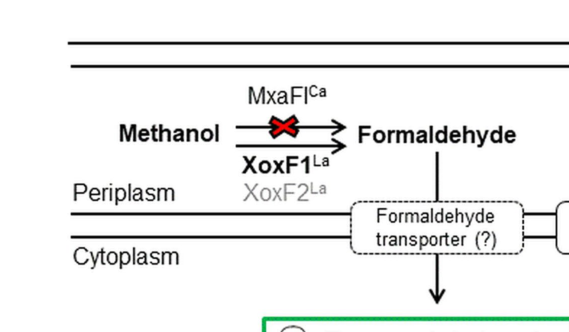

mxaG (also known as moxG) encodes cytochrome c_L, a specialized c-type cytochrome that serves as the dedicated electron acceptor for the calcium-dependent methanol dehydrogenase MxaFI. The protein contains heme c covalently attached and exhibits a redox potential of +256 mV at pH 7.0, substantially higher than the analogous XoxG cytochrome (+172 mV) that serves the lanthanide-dependent XoxF system. Located in the periplasm, MxaG accepts electrons from reduced MxaFI following methanol oxidation and transfers them to downstream components of the respiratory electron transport chain. MxaG itself does not catalyze methanol oxidation; rather, it mediates electron transfer from the MDH redox cofactor PQQ to additional periplasmic cytochromes, coupling methanol oxidation to respiration and energy conservation. The gene is part of the mxa operon (mxaFJGIRSACKLDEHB) and is subject to the same complex regulatory control as mxaFI, being activated by MxbM in the absence of lanthanides and repressed when lanthanides are present. Crystal structure has been solved at 1.60 Å resolution (PDB: 2C8S), revealing the molecular architecture of this electron transfer protein.
| GO Term | Evidence | Action | Reason |
|---|---|---|---|
|
GO:0005506
iron ion binding
|
IEA
GO_REF:0000002 |
ACCEPT |
Summary: Correct - MxaG binds iron in the heme prosthetic group [file:METEA/mxaG/mxaG-uniprot.txt, "Binds 1 heme c group covalently per subunit" and "Iron" in keywords]. The UniProt feature table specifies the axial iron-coordinating histidine (residue 94, ligand Fe), consistent with iron ion binding in a c-type cytochrome heme.
Reason: The heme c iron is the redox-active center of cytochrome c_L; iron ion binding is a correct molecular function supported by the UniProt covalent heme c binding sites and the Fe axial-binding residue.
|
|
GO:0009055
electron transfer activity
|
IEA
GO_REF:0000002 |
ACCEPT |
Summary: Correct and core - MxaG (cytochrome c_L) functions as the dedicated electron acceptor for periplasmic PQQ-dependent methanol dehydrogenase, accepting electrons from reduced MxaFI and transferring them onward to additional cytochromes in the respiratory electron transport chain [file:METEA/mxaG/mxaG-uniprot.txt, "Electron acceptor for MDH. Acts in methanol oxidation"].
Reason: This is the primary molecular function of the gene product. Multiple authoritative sources name MxaG as the cytochrome c_L electron-transfer partner of methanol dehydrogenase, transferring electrons from PQQ to downstream cytochromes.
Supporting Evidence:
file:METEA/mxaG/mxaG-deep-research-falcon.md
All methylotrophic PQQ-ADHs are periplasmic enzymes associated with a cytochrome cL (MxaG, XoxG, and ExaG, respectively) that transfers electrons from PQQ to additional cytochromes in the electron transport chain
file:METEA/mxaG/mxaG-deep-research-falcon.md
the specific cytochrome c that accepts electrons from methanol dehydrogenase
file:METEA/mxaG/mxaG-deep-research-falcon.md
reduced PQQ is reoxidized by transferring electrons to the heme of cytochrome cL, which is then oxidized by downstream cytochromes
|
|
GO:0015945
methanol metabolic process
|
IEA
GO_REF:0000043 |
ACCEPT |
Summary: Correct and core - MxaG participates in methanol metabolism as the electron acceptor in the calcium-dependent methanol oxidation pathway, feeding electrons from periplasmic methanol oxidation into respiration [file:METEA/mxaG/mxaG-uniprot.txt, "Acts in methanol oxidation" and "Methanol utilization" in keywords].
Reason: MxaG is genetically part of the mxa methanol dehydrogenase cluster and functionally required for methanol oxidation by accepting electrons from the MDH PQQ cofactor; the deep research confirms its role in the periplasmic methanol-oxidation electron-transfer module.
Supporting Evidence:
file:METEA/mxaG/mxaG-deep-research-falcon.md
methanol oxidation occurs in the periplasm via PQQ-dependent ADHs
file:METEA/mxaG/mxaG-deep-research-falcon.md
Electrons are transferred from PQQ to cytochrome cL and then to additional cytochromes/respiratory chain components, coupling methanol oxidation to energy generation
|
|
GO:0020037
heme binding
|
IEA
GO_REF:0000002 |
ACCEPT |
Summary: Correct - MxaG contains one heme c group covalently bound per subunit [file:METEA/mxaG/mxaG-uniprot.txt, "Binds 1 heme c group covalently per subunit"]. The covalent heme c is the redox cofactor through which MxaG accepts and donates electrons.
Reason: Covalent heme c binding is documented in UniProt (CXXCH-type c-type cytochrome with covalent thioether attachment at residues 90 and 93 and Fe axial coordination at residue 94); the heme is essential to its electron-transfer function.
|
|
GO:0042597
periplasmic space
|
IEA
GO_REF:0000120 |
ACCEPT |
Summary: Correct and core - MxaG is localized to the periplasm where it accepts electrons from periplasmic MxaFI [file:METEA/mxaG/mxaG-uniprot.txt, "SUBCELLULAR LOCATION: Periplasm"]. It bears an N-terminal signal peptide (residues 1-25) consistent with periplasmic export.
Reason: UniProt assigns periplasmic localization and a cleaved signal peptide; the deep research independently places cytochrome c_L in the periplasmic methanol-oxidation electron-transfer chain alongside the periplasmic PQQ-dependent dehydrogenases.
Supporting Evidence:
file:METEA/mxaG/mxaG-deep-research-falcon.md
All methylotrophic PQQ-ADHs are periplasmic enzymes associated with a cytochrome cL (MxaG, XoxG, and ExaG, respectively) that transfers electrons from PQQ to additional cytochromes in the electron transport chain
|
|
GO:0046872
metal ion binding
|
IEA
GO_REF:0000043 |
KEEP AS NON CORE |
Summary: Correct but general - MxaG binds iron in the heme group. The more specific terms GO:0005506 (iron ion binding) and GO:0020037 (heme binding) better capture this function.
Reason: This is a redundant generic parent of the iron ion binding annotation already present; it is retained as non-core because the specific iron ion binding and heme binding terms convey the actual molecular context.
|
The research report should be a detailed narrative explaining the function, biological processes, and localization of the gene product. Citations should be given for all claims.
You should prioritize authoritative reviews and primary scientific literature when conducting research. You can supplement
this with annotations you find in gene/protein databases, but these can be outdated or inaccurate.
We are specifically interested in the primary function of the gene - for enzymes, what reaction is catalyzed, and what is the substrate specificity? For transporters, what is the substrate? For structural proteins or adapters, what is the broader structural role? For signaling molecules, what is the role in the pathway.
We are interested in where in or outside the cell the gene product carries out its function.
We are also interested in the signaling or biochemical pathways in which the gene functions. We are less interested in broad pleiotropic effects, except where these elucidate the precise role.
Include evidence where possible. We are interested in both experimental evidence as well as inference from structure, evolution, or bioinformatic analysis. Precise studies should be prioritized over high-throughput, where available.
User-specified target: UniProt P14774, described as Cytochrome c-L (precursor), gene moxG with synonym mxaG, in Methylorubrum extorquens strain AM1.
Verification from retrieved literature:
- In Methylorubrum extorquens AM1, the canonical methanol oxidation gene cluster includes mxaG within the operon mxaFJGIRSACKLDEHB (a 12.5-kb cluster) (publication date: May 2003) (https://doi.org/10.1128/jb.185.10.2980-2987.2003). This anchors mxaG in the correct organism and pathway context (chistoserdova2003methylotrophyinmethylobacterium pages 4-5).
- The same 2003 genomic analysis explicitly lists mxaG (also noted as moxG) and annotates it as a cytochrome c-type protein (Table 1 in that work) (publication date: May 2003) (https://doi.org/10.1128/jb.185.10.2980-2987.2003) (chistoserdova2003methylotrophyinmethylobacterium pages 2-3).
- Multiple sources explicitly identify MxaG as cytochrome cL, the cognate electron acceptor for periplasmic PQQ-dependent methanol dehydrogenases (MDH/PQQ-ADHs) in Methylorubrum extorquens AM1 or its historical name (Methylobacterium extorquens) (roszczenkojasinska2020geneproductsand pages 4-5, roszczenkojasinska2020geneproductsand pages 1-4, purves2019understandingtheimpacts pages 24-28).
Limitations of the retrieved corpus: the full UniProt accession P14774 is not explicitly mentioned in the retrieved papers; thus the accession-level mapping is not directly evidenced here, but the gene-symbol crosswalk mxaG ↔ moxG in M. extorquens AM1 is supported (chistoserdova2003methylotrophyinmethylobacterium pages 2-3).
Cytochrome cL is a c-type cytochrome that functions as the physiological electron acceptor for periplasmic, PQQ-dependent alcohol/methanol dehydrogenases used in methylotrophy (roszczenkojasinska2020geneproductsand pages 4-5, roszczenkojasinska2020geneproductsand pages 1-4, purves2019understandingtheimpacts pages 24-28). In Methylorubrum extorquens AM1, MxaG is specifically named as the cytochrome cL partner associated with methylotrophic PQQ-ADHs (roszczenkojasinska2020geneproductsand pages 4-5, roszczenkojasinska2020geneproductsand pages 1-4).
In periplasmic methanol oxidation, methanol dehydrogenase (MDH) oxidizes methanol to formaldehyde and reduces the prosthetic group PQQ. The reduced PQQ is then reoxidized by transferring electrons to the heme of cytochrome cL, which passes electrons further into the electron transport chain (roszczenkojasinska2020geneproductsand pages 4-5, roszczenkojasinska2020geneproductsand pages 1-4, rojas2021elucidationofthe pages 19-23, rojas2021elucidationofthea pages 19-23).
A foundational genomic analysis of M. extorquens AM1 describes a 12.5-kb cluster containing 14 mxa genes (mxaFJGIRSACKLDEHB) transcribed in the same direction; these genes encode methanol dehydrogenase structural polypeptides and the specific cytochrome c that accepts electrons from methanol dehydrogenase, along with other essential methanol oxidation proteins (https://doi.org/10.1128/jb.185.10.2980-2987.2003; publication date May 2003) (chistoserdova2003methylotrophyinmethylobacterium pages 4-5).
Best-supported function: moxG/mxaG encodes cytochrome cL (MxaG), which accepts electrons derived from MDH/PQQ chemistry and transfers them onward to additional cytochromes in the electron transport chain.
Evidence:
- “All methylotrophic PQQ-ADHs are periplasmic enzymes associated with a cytochrome cL (MxaG, XoxG, and ExaG, respectively) that transfers electrons from PQQ to additional cytochromes in the electron transport chain.” (publication date Jul 2020, Scientific Reports, https://doi.org/10.1038/s41598-020-69401-4) (roszczenkojasinska2020geneproductsand pages 1-4).
- The AM1 genome analysis states that the 14-gene mxa cluster encodes MDH structural polypeptides and “the specific cytochrome c that accepts electrons from methanol dehydrogenase” (publication date May 2003, Journal of Bacteriology, https://doi.org/10.1128/jb.185.10.2980-2987.2003) (chistoserdova2003methylotrophyinmethylobacterium pages 4-5).
- Mechanistically, reduced PQQ is reoxidized by transferring electrons to the heme of cytochrome cL, which is then oxidized by downstream cytochromes (rojas2021elucidationofthe pages 19-23, rojas2021elucidationofthea pages 19-23).
Reaction context (what MxaG enables rather than catalyzes): MxaG itself does not catalyze methanol oxidation; rather, it mediates electron transfer from the MDH redox cofactor (PQQ) to downstream respiratory components (roszczenkojasinska2020geneproductsand pages 4-5, roszczenkojasinska2020geneproductsand pages 1-4, rojas2021elucidationofthe pages 19-23, rojas2021elucidationofthea pages 19-23).
moxG/mxaG is part of aerobic methylotrophic methanol utilization, specifically the periplasmic methanol-oxidation module that feeds electrons into respiration.
The strongest localization inference supported by the retrieved evidence is periplasmic association:
- Methylotrophic PQQ-ADHs are explicitly described as periplasmic and associated with cytochrome cL (roszczenkojasinska2020geneproductsand pages 1-4). This supports that cytochrome cL (MxaG) functions in the periplasmic electron-transfer chain (roszczenkojasinska2020geneproductsand pages 1-4).
- A schematic figure from Roszczenko-Jasińska et al. depicts methanol oxidation in the periplasm by MxaFI and XoxF enzymes (Figure 1; publication date Jul 2020, https://doi.org/10.1038/s41598-020-69401-4) (roszczenkojasinska2020geneproductsand media 5e588001).
A 2023 review focused on rare earth element utilization summarizes the division of labor between Ca-dependent MxaFI MDH systems and lanthanide-dependent XoxF MDH systems and explicitly places mxaG as encoding the cognate physiological electron acceptor (cytochrome cL) for methanol oxidation (xie2023molecularmechanismsof pages 13-18). It also describes a widely reported regulatory phenomenon: in the presence of lanthanides, expression of MxaF-type systems is suppressed while XoxF-type systems are induced (xie2023molecularmechanismsof pages 13-18).
Interpretation for moxG/mxaG: in organisms/conditions where the XoxF system dominates, cytochrome XoxG (a cytochrome cL analog) may be the primary periplasmic electron acceptor for lanthanide-dependent MDH, while MxaG remains the canonical partner for the Ca-dependent MxaFI MDH (roszczenkojasinska2020geneproductsand pages 1-4, xie2023molecularmechanismsof pages 13-18).
Although a 2024 source was retrieved related to widespread bacterial use of lanthanides, the accessible evidence in this run did not provide mxaG-specific mechanistic or quantitative updates suitable for citation about MxaG itself.
The methylotroph Methylorubrum extorquens AM1 is repeatedly framed in the literature as a platform organism for methanol-based biotechnology. In this context, methanol oxidation (and therefore functional electron transfer via cytochrome partners such as MxaG) is central to growth and productivity on methanol (purves2019understandingtheimpacts pages 24-28). While this run’s strongest application-specific citation is general rather than mechanistically focused, it supports that AM1 has been used for bioproduction in applied settings (purves2019understandingtheimpacts pages 24-28).
A major applied motivation discussed for M. extorquens AM1 is the capacity of methylotrophs to sense/transport lanthanides, with potential relevance to sustainable recovery of lanthanides; however, this run’s strongest lanthanide-focused evidence addresses transport/storage and XoxF function more than MxaG itself (roszczenkojasinska2020geneproductsand pages 1-4).
The retrieved corpus contained limited directly mxaG-specific quantitative biochemistry (e.g., redox potentials, kcat/KM) suitable for extraction. However, two quantitative/structured datapoints relevant to confidence in methylotrophy network assignment include:
- In a transposon mutagenesis study in AM1 focused on lanthanide-dependent methanol metabolism, the authors screened >600 transposon mutants and followed up genes identified independently four or more times (28 genes), with some mutants showing ≥30% reductions in growth rate; this supports the utility of genetic approaches in mapping methanol oxidation accessory functions, though it is not a direct measurement of MxaG activity (roszczenkojasinska2020geneproductsand pages 5-6).
- The 2003 genomic work defines the mxa cluster size (12.5 kb) and gene count (14 mxa genes) as a structured genomic feature of the AM1 methanol oxidation module (chistoserdova2003methylotrophyinmethylobacterium pages 4-5).
| Claim (function/localization/pathway) | Evidence summary | Organism/strain context | Source (with year, journal, URL) | Citation id |
|---|---|---|---|---|
| mxaG encodes cytochrome cL, the cognate electron acceptor associated with methanol dehydrogenase | Review text explicitly states that methylotrophic PQQ-dependent alcohol dehydrogenases are associated with cytochrome cL and names MxaG as the cytochrome cL partner; another source states that mxaG encodes cytochrome cL and identifies it as the primary electron acceptor in the MDH system. | Methylorubrum extorquens AM1 / historical Methylobacterium extorquens context | Roszczenko-Jasińska et al., 2020, Scientific Reports, https://doi.org/10.1038/s41598-020-69401-4; Purves, 2019, unknown journal, URL not available in retrieved record | (roszczenkojasinska2020geneproductsand pages 4-5, roszczenkojasinska2020geneproductsand pages 1-4, purves2019understandingtheimpacts pages 24-28) |
| Cytochrome cL functions in the periplasmic methanol-oxidation electron transfer chain | Evidence states methanol oxidation occurs in the periplasm via PQQ-dependent ADHs/MDH, and that the associated cytochrome cL transfers electrons from reduced PQQ to additional cytochromes in the electron transport chain. | Methylorubrum extorquens AM1 | Roszczenko-Jasińska et al., 2020, Scientific Reports, https://doi.org/10.1038/s41598-020-69401-4 | (roszczenkojasinska2020geneproductsand pages 4-5, roszczenkojasinska2020geneproductsand pages 1-4) |
| In Methylobacterium/Methylorubrum extorquens, mxaG is genetically part of the mxa methanol dehydrogenase cluster | The mxa operon is described as mxaFJGIRSACKLDEHB, placing mxaG within the canonical methanol dehydrogenase gene cluster and supporting its dedicated role in MDH function. | Methylorubrum extorquens AM1 | Roszczenko-Jasińska et al., 2020, Scientific Reports, https://doi.org/10.1038/s41598-020-69401-4 | (roszczenkojasinska2020geneproductsand pages 4-5) |
| Electron flow proceeds from MDH-reduced PQQ to cytochrome cL | A source describes that methanol oxidation by periplasmic MDH reduces PQQ, and the reduced PQQ is then reoxidized by transfer of two electrons to the heme of cytochrome cL. | Historical naming: Methylobacterium extorquens (same species complex as Methylorubrum extorquens) | Rojas, 2021, unknown journal, URL not available in retrieved record | (rojas2021elucidationofthe pages 19-23, rojas2021elucidationofthea pages 19-23) |
| Cytochrome cL passes electrons onward to downstream cytochromes/respiratory components | One source states cytochrome cL transfers electrons from PQQ to additional cytochromes in the electron transport chain; another states cytochrome cL is oxidized by cytochrome cH, linking methanol oxidation to respiration and energy conservation. | Methylorubrum extorquens AM1 / historical Methylobacterium extorquens context | Roszczenko-Jasińska et al., 2020, Scientific Reports, https://doi.org/10.1038/s41598-020-69401-4; Rojas, 2021, unknown journal, URL not available in retrieved record | (roszczenkojasinska2020geneproductsand pages 4-5, rojas2021elucidationofthe pages 19-23, rojas2021elucidationofthea pages 19-23) |
| Methanol oxidation enzymes and their cytochrome cL partner are localized in the periplasm | The evidence states that methylotrophic PQQ-ADHs are periplasmic and associated with cytochrome cL; a figure-based summary also depicts methanol oxidation in the periplasm by MxaFI/XoxF enzymes. | Methylorubrum extorquens AM1 | Roszczenko-Jasińska et al., 2020, Scientific Reports, https://doi.org/10.1038/s41598-020-69401-4 | (roszczenkojasinska2020geneproductsand pages 1-4, roszczenkojasinska2020geneproductsand media 5e588001) |
| The gathered literature supports mxaG as the relevant symbol; explicit use of the synonym moxG was not found in the retrieved evidence | Across the directly gathered evidence, the gene is referred to as mxaG encoding cytochrome cL; the retrieved texts did not explicitly mention the synonym moxG or UniProt P14774. | Methylorubrum extorquens AM1 / historical Methylobacterium extorquens context | Roszczenko-Jasińska et al., 2020, Scientific Reports, https://doi.org/10.1038/s41598-020-69401-4; Rojas, 2021, unknown journal, URL not available in retrieved record; Purves, 2019, unknown journal, URL not available in retrieved record | (roszczenkojasinska2020geneproductsand pages 4-5, roszczenkojasinska2020geneproductsand pages 1-4, rojas2021elucidationofthe pages 19-23, rojas2021elucidationofthea pages 19-23, purves2019understandingtheimpacts pages 24-28) |
Table: This table summarizes directly supported functional annotation claims for Methylorubrum extorquens AM1 moxG/mxaG (cytochrome cL), including function, localization, and pathway role. It is useful as a traceable evidence map restricted to the gathered sources and context IDs.
References
(chistoserdova2003methylotrophyinmethylobacterium pages 4-5): Ludmila Chistoserdova, Sung-Wei Chen, Alla Lapidus, and Mary E. Lidstrom. Methylotrophy in methylobacterium extorquens am1 from a genomic point of view. Journal of Bacteriology, 185:2980-2987, May 2003. URL: https://doi.org/10.1128/jb.185.10.2980-2987.2003, doi:10.1128/jb.185.10.2980-2987.2003. This article has 402 citations and is from a peer-reviewed journal.
(chistoserdova2003methylotrophyinmethylobacterium pages 2-3): Ludmila Chistoserdova, Sung-Wei Chen, Alla Lapidus, and Mary E. Lidstrom. Methylotrophy in methylobacterium extorquens am1 from a genomic point of view. Journal of Bacteriology, 185:2980-2987, May 2003. URL: https://doi.org/10.1128/jb.185.10.2980-2987.2003, doi:10.1128/jb.185.10.2980-2987.2003. This article has 402 citations and is from a peer-reviewed journal.
(roszczenkojasinska2020geneproductsand pages 4-5): Paula Roszczenko-Jasińska, Huong N. Vu, Gabriel A. Subuyuj, Ralph Valentine Crisostomo, James Cai, Nicholas F. Lien, Erik J. Clippard, Elena M. Ayala, Richard T. Ngo, Fauna Yarza, Justin P. Wingett, Charumathi Raghuraman, Caitlin A. Hoeber, Norma C. Martinez-Gomez, and Elizabeth Skovran. Gene products and processes contributing to lanthanide homeostasis and methanol metabolism in methylorubrum extorquens am1. Scientific Reports, Jul 2020. URL: https://doi.org/10.1038/s41598-020-69401-4, doi:10.1038/s41598-020-69401-4. This article has 98 citations and is from a peer-reviewed journal.
(roszczenkojasinska2020geneproductsand pages 1-4): Paula Roszczenko-Jasińska, Huong N. Vu, Gabriel A. Subuyuj, Ralph Valentine Crisostomo, James Cai, Nicholas F. Lien, Erik J. Clippard, Elena M. Ayala, Richard T. Ngo, Fauna Yarza, Justin P. Wingett, Charumathi Raghuraman, Caitlin A. Hoeber, Norma C. Martinez-Gomez, and Elizabeth Skovran. Gene products and processes contributing to lanthanide homeostasis and methanol metabolism in methylorubrum extorquens am1. Scientific Reports, Jul 2020. URL: https://doi.org/10.1038/s41598-020-69401-4, doi:10.1038/s41598-020-69401-4. This article has 98 citations and is from a peer-reviewed journal.
(purves2019understandingtheimpacts pages 24-28): K Purves. Understanding the impacts of viruses on microbial methanol utilisation in seawater. Unknown journal, 2019.
(rojas2021elucidationofthe pages 19-23): J Rojas. Elucidation of the plant growth–promoting effect of hartmannibacter diazotrophicus on tolerance of barley to salt stress. Unknown journal, 2021.
(rojas2021elucidationofthea pages 19-23): J Rojas. Elucidation of the plant growth–promoting effect of hartmannibacter diazotrophicus on tolerance of barley to salt stress. Unknown journal, 2021.
(roszczenkojasinska2020geneproductsand media 5e588001): Paula Roszczenko-Jasińska, Huong N. Vu, Gabriel A. Subuyuj, Ralph Valentine Crisostomo, James Cai, Nicholas F. Lien, Erik J. Clippard, Elena M. Ayala, Richard T. Ngo, Fauna Yarza, Justin P. Wingett, Charumathi Raghuraman, Caitlin A. Hoeber, Norma C. Martinez-Gomez, and Elizabeth Skovran. Gene products and processes contributing to lanthanide homeostasis and methanol metabolism in methylorubrum extorquens am1. Scientific Reports, Jul 2020. URL: https://doi.org/10.1038/s41598-020-69401-4, doi:10.1038/s41598-020-69401-4. This article has 98 citations and is from a peer-reviewed journal.
(xie2023molecularmechanismsof pages 13-18): R Xie. Molecular mechanisms of rare earth element utilization by methane-oxidizing bacteria and protease-producing bacteria. Unknown journal, 2023.
(roszczenkojasinska2020geneproductsand pages 5-6): Paula Roszczenko-Jasińska, Huong N. Vu, Gabriel A. Subuyuj, Ralph Valentine Crisostomo, James Cai, Nicholas F. Lien, Erik J. Clippard, Elena M. Ayala, Richard T. Ngo, Fauna Yarza, Justin P. Wingett, Charumathi Raghuraman, Caitlin A. Hoeber, Norma C. Martinez-Gomez, and Elizabeth Skovran. Gene products and processes contributing to lanthanide homeostasis and methanol metabolism in methylorubrum extorquens am1. Scientific Reports, Jul 2020. URL: https://doi.org/10.1038/s41598-020-69401-4, doi:10.1038/s41598-020-69401-4. This article has 98 citations and is from a peer-reviewed journal.

id: P14774
gene_symbol: mxaG
product_type: PROTEIN
taxon:
id: NCBITaxon:272630
label: Methylorubrum extorquens AM1
description: 'mxaG (also known as moxG) encodes cytochrome c_L, a specialized c-type
cytochrome that serves as the dedicated electron acceptor for the calcium-dependent
methanol dehydrogenase MxaFI. The protein contains heme c covalently attached and
exhibits a redox potential of +256 mV at pH 7.0, substantially higher than the analogous
XoxG cytochrome (+172 mV) that serves the lanthanide-dependent XoxF system. Located
in the periplasm, MxaG accepts electrons from reduced MxaFI following methanol oxidation
and transfers them to downstream components of the respiratory electron transport
chain. MxaG itself does not catalyze methanol oxidation; rather, it mediates electron
transfer from the MDH redox cofactor PQQ to additional periplasmic cytochromes,
coupling methanol oxidation to respiration and energy conservation. The gene is part
of the mxa operon (mxaFJGIRSACKLDEHB) and is subject to the same complex regulatory
control as mxaFI, being activated by MxbM in the absence of lanthanides and repressed
when lanthanides are present. Crystal structure has been solved at 1.60 Å resolution
(PDB: 2C8S), revealing the molecular architecture of this electron transfer protein.'
existing_annotations:
- term:
id: GO:0005506
label: iron ion binding
evidence_type: IEA
original_reference_id: GO_REF:0000002
review:
summary: Correct - MxaG binds iron in the heme prosthetic group [file:METEA/mxaG/mxaG-uniprot.txt,
"Binds 1 heme c group covalently per subunit" and "Iron" in keywords]. The UniProt
feature table specifies the axial iron-coordinating histidine (residue 94, ligand
Fe), consistent with iron ion binding in a c-type cytochrome heme.
action: ACCEPT
reason: The heme c iron is the redox-active center of cytochrome c_L; iron ion binding
is a correct molecular function supported by the UniProt covalent heme c binding
sites and the Fe axial-binding residue.
- term:
id: GO:0009055
label: electron transfer activity
evidence_type: IEA
original_reference_id: GO_REF:0000002
review:
summary: Correct and core - MxaG (cytochrome c_L) functions as the dedicated electron
acceptor for periplasmic PQQ-dependent methanol dehydrogenase, accepting electrons
from reduced MxaFI and transferring them onward to additional cytochromes in
the respiratory electron transport chain [file:METEA/mxaG/mxaG-uniprot.txt, "Electron
acceptor for MDH. Acts in methanol oxidation"].
action: ACCEPT
reason: This is the primary molecular function of the gene product. Multiple authoritative
sources name MxaG as the cytochrome c_L electron-transfer partner of methanol
dehydrogenase, transferring electrons from PQQ to downstream cytochromes.
supported_by:
- reference_id: file:METEA/mxaG/mxaG-deep-research-falcon.md
supporting_text: All methylotrophic PQQ-ADHs are periplasmic enzymes associated
with a cytochrome cL (MxaG, XoxG, and ExaG, respectively) that transfers electrons
from PQQ to additional cytochromes in the electron transport chain
reference_section_type: OTHER
- reference_id: file:METEA/mxaG/mxaG-deep-research-falcon.md
supporting_text: the specific cytochrome c that accepts electrons from methanol
dehydrogenase
reference_section_type: OTHER
- reference_id: file:METEA/mxaG/mxaG-deep-research-falcon.md
supporting_text: reduced PQQ is reoxidized by transferring electrons to the heme
of cytochrome cL, which is then oxidized by downstream cytochromes
reference_section_type: OTHER
- term:
id: GO:0015945
label: methanol metabolic process
evidence_type: IEA
original_reference_id: GO_REF:0000043
review:
summary: Correct and core - MxaG participates in methanol metabolism as the electron
acceptor in the calcium-dependent methanol oxidation pathway, feeding electrons
from periplasmic methanol oxidation into respiration [file:METEA/mxaG/mxaG-uniprot.txt,
"Acts in methanol oxidation" and "Methanol utilization" in keywords].
action: ACCEPT
reason: MxaG is genetically part of the mxa methanol dehydrogenase cluster and
functionally required for methanol oxidation by accepting electrons from the
MDH PQQ cofactor; the deep research confirms its role in the periplasmic methanol-oxidation
electron-transfer module.
supported_by:
- reference_id: file:METEA/mxaG/mxaG-deep-research-falcon.md
supporting_text: methanol oxidation occurs in the periplasm via PQQ-dependent
ADHs
reference_section_type: OTHER
- reference_id: file:METEA/mxaG/mxaG-deep-research-falcon.md
supporting_text: Electrons are transferred from PQQ to cytochrome cL and then
to additional cytochromes/respiratory chain components, coupling methanol oxidation
to energy generation
reference_section_type: OTHER
- term:
id: GO:0020037
label: heme binding
evidence_type: IEA
original_reference_id: GO_REF:0000002
review:
summary: Correct - MxaG contains one heme c group covalently bound per subunit
[file:METEA/mxaG/mxaG-uniprot.txt, "Binds 1 heme c group covalently per subunit"].
The covalent heme c is the redox cofactor through which MxaG accepts and donates
electrons.
action: ACCEPT
reason: Covalent heme c binding is documented in UniProt (CXXCH-type c-type cytochrome
with covalent thioether attachment at residues 90 and 93 and Fe axial coordination
at residue 94); the heme is essential to its electron-transfer function.
- term:
id: GO:0042597
label: periplasmic space
evidence_type: IEA
original_reference_id: GO_REF:0000120
review:
summary: 'Correct and core - MxaG is localized to the periplasm where it accepts
electrons from periplasmic MxaFI [file:METEA/mxaG/mxaG-uniprot.txt, "SUBCELLULAR
LOCATION: Periplasm"]. It bears an N-terminal signal peptide (residues 1-25)
consistent with periplasmic export.'
action: ACCEPT
reason: UniProt assigns periplasmic localization and a cleaved signal peptide;
the deep research independently places cytochrome c_L in the periplasmic methanol-oxidation
electron-transfer chain alongside the periplasmic PQQ-dependent dehydrogenases.
supported_by:
- reference_id: file:METEA/mxaG/mxaG-deep-research-falcon.md
supporting_text: All methylotrophic PQQ-ADHs are periplasmic enzymes associated
with a cytochrome cL (MxaG, XoxG, and ExaG, respectively) that transfers electrons
from PQQ to additional cytochromes in the electron transport chain
reference_section_type: OTHER
- term:
id: GO:0046872
label: metal ion binding
evidence_type: IEA
original_reference_id: GO_REF:0000043
review:
summary: Correct but general - MxaG binds iron in the heme group. The more specific
terms GO:0005506 (iron ion binding) and GO:0020037 (heme binding) better capture
this function.
action: KEEP_AS_NON_CORE
reason: This is a redundant generic parent of the iron ion binding annotation already
present; it is retained as non-core because the specific iron ion binding and
heme binding terms convey the actual molecular context.
core_functions:
- description: MxaG functions as the dedicated electron acceptor (cytochrome c_L) for
the calcium-dependent methanol dehydrogenase MxaFI system. The c-type cytochrome
accepts electrons from reduced MxaFI following methanol oxidation to formaldehyde,
transferring them via its covalent heme c to downstream respiratory chain components.
MxaG itself does not catalyze methanol oxidation; rather, it mediates electron
transfer from the MDH redox cofactor PQQ to additional periplasmic cytochromes.
MxaG exhibits a redox potential of +256 mV at pH 7.0, which is optimized for efficient
electron transfer from the calcium-dependent methanol dehydrogenase system. This
is notably higher than the +172 mV potential of XoxG, the analogous cytochrome
serving the lanthanide-dependent XoxF system, reflecting the different biochemical
properties of the two methanol oxidation pathways.
molecular_function:
id: GO:0009055
label: electron transfer activity
directly_involved_in:
- id: GO:0015945
label: methanol metabolic process
locations:
- id: GO:0042597
label: periplasmic space
supported_by:
- reference_id: file:METEA/mxaG/mxaG-uniprot.txt
supporting_text: 'Electron acceptor for MDH. Acts in methanol oxidation...Redox
potential: E(0) is about +256 mV... SUBCELLULAR LOCATION: Periplasm...Binds
1 heme c group covalently per subunit'
- reference_id: file:METEA/mxaG/mxaG-deep-research-falcon.md
supporting_text: All methylotrophic PQQ-ADHs are periplasmic enzymes associated
with a cytochrome cL (MxaG, XoxG, and ExaG, respectively) that transfers electrons
from PQQ to additional cytochromes in the electron transport chain
reference_section_type: OTHER
- reference_id: file:METEA/mxaG/mxaG-deep-research-falcon.md
supporting_text: MxaG itself does not catalyze methanol oxidation; rather, it
reference_section_type: OTHER
references:
- id: file:METEA/mxaG/mxaG-uniprot.txt
title: UniProt entry for mxaG cytochrome c_L
findings: []
- id: file:METEA/mxaG/mxaG-deep-research-falcon.md
title: Falcon deep research report for mxaG (cytochrome c_L) in Methylorubrum extorquens
AM1
findings:
- statement: MxaG (cytochrome c_L) is the cognate periplasmic electron acceptor for
methylotrophic PQQ-dependent methanol/alcohol dehydrogenases, transferring electrons
from PQQ to additional cytochromes in the respiratory electron transport chain.
supporting_text: All methylotrophic PQQ-ADHs are periplasmic enzymes associated
with a cytochrome cL (MxaG, XoxG, and ExaG, respectively) that transfers electrons
from PQQ to additional cytochromes in the electron transport chain
reference_section_type: OTHER
- statement: The mxa methanol-oxidation gene cluster encodes the specific cytochrome
c that accepts electrons from methanol dehydrogenase.
supporting_text: the specific cytochrome c that accepts electrons from methanol
dehydrogenase
reference_section_type: OTHER
- statement: Mechanistically, reduced PQQ is reoxidized by transferring electrons
to the heme of cytochrome c_L, which is in turn oxidized by downstream cytochromes.
supporting_text: reduced PQQ is reoxidized by transferring electrons to the heme
of cytochrome cL, which is then oxidized by downstream cytochromes
reference_section_type: OTHER
- statement: MxaG is a shuttle, not a catalyst - it does not itself catalyze methanol
oxidation but mediates electron transfer from the MDH redox cofactor PQQ to downstream
respiratory components.
supporting_text: 'MxaG itself does not catalyze methanol oxidation; rather, it'
reference_section_type: OTHER
- statement: Methanol oxidation by the PQQ-dependent dehydrogenases, and hence the
cytochrome c_L electron-transfer step it feeds, occurs in the periplasm.
supporting_text: methanol oxidation occurs in the periplasm via PQQ-dependent ADHs
reference_section_type: OTHER
- statement: Electron flow proceeds from PQQ to cytochrome c_L and onward to additional
cytochromes/respiratory chain components, coupling methanol oxidation to energy
generation.
supporting_text: Electrons are transferred from PQQ to cytochrome cL and then to
additional cytochromes/respiratory chain components, coupling methanol oxidation
to energy generation
reference_section_type: OTHER
- id: GO_REF:0000002
title: Gene Ontology annotation through association of InterPro records with GO
terms.
findings: []
- id: GO_REF:0000043
title: Gene Ontology annotation based on UniProtKB/Swiss-Prot keyword mapping
findings: []
- id: GO_REF:0000120
title: Combined Automated Annotation using Multiple IEA Methods.
findings: []
status: COMPLETE
{kind=link}